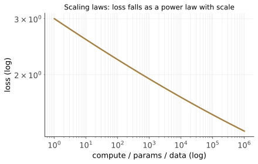

本讲目录
第 07 讲 · Scaling Laws 与大语言模型
诞生场景：2017 年架构问题解决后，一个朴素到近乎莽撞的问题摆上台面：把模型做大，会发生什么？训练预算昂贵，没人敢盲赌。2020 年 Kaplan 等人给出了定量答案：在特定训练设置、数据分布与评估范围内，损失随规模近似按幂律平滑下降，可用于有限范围内的预算与外推。这条曲线提供了实验依据，但不是脱离条件的成本承诺。本讲讲清楚三件事：LLM 到底在学什么（下一词预测的训练压力）、Scaling Laws 的数学，以及一个"互联网续写机"如何被训练成助手。
学习层：Scaling law 是经验拟合，也是有适用域的资源分配模型
具体谜题：同一笔算力，应该买参数还是买数据？
把训练预算固定为 \(C\)：模型参数量 \(N\) 增大，单个 token 的计算变贵；数据量 \(D\) 增大，模型看到的样本更多。Scaling law 要回答的不是“越大越好”这么一句口号，而是：在一组实验拟合出的损失面上，怎样分配这两个有限资源？
先做预测，再打开实验
先猜：若 \(C\) 增加 4 倍，论文摘要的主结论会倾向于让 \(N,D\) 各约增加 2 倍；而本页交互模型由 \(\alpha=.34,\beta=.28\) 严格算出 \(N^*\) 约增加 \(4^{.452}\) 倍、\(D^*\) 约增加 \(4^{.548}\) 倍。拖动算力与 \(r=D/N\)，观察“当前配比”和“最优配比”是否重合。
最小模型：拟合的损失面 + 计算约束
本实验沿用 Hoffmann et al. 的 Approach 3 教学参数化：
\(E\) 是拟合得到的渐近项；它不是“英文熵”的同义词，也不应被当成现实中的绝对不可约下限。\(A/N^\alpha\) 表示有限模型容量的项，\(B/D^\beta\) 表示有限训练数据/训练步数的项。这里的 \(C\approx6ND\) 是稠密 Transformer 预训练的粗略 FLOPs 账本，MoE、稀疏路由、检索、不同序列长度和实现细节都可能改变它。
形式化步骤：从一条曲线到一个可计算的配比
- 在若干 \(N,D\) 和训练设置上测量损失，用有限实验拟合 \(E,A,B,\alpha,\beta\)；这一步决定模型的经验范围。
- 给定当前配比 \(r=D/N\)，约束直接给出 \(N=\sqrt{C/(6r)}\)、\(D=rN\)，于是能把每个 allocation 映射到一个预测损失。
- 消去 \(D=C/(6N)\) 并令导数为零，得到 \(N^*\propto C^{\beta/(\alpha+\beta)}\)、\(D^*\propto C^{\alpha/(\alpha+\beta)}\)；代入本实验的四舍五入参数，就是 .452 与 .548，显示为约 .45/.55。
论文的 Approach 1（\(a=.50,b=.50\)）、Approach 2（\(a=.49,b=.51\)）与 Approach 3（论文报告约 \(a=.46,b=.54\)）是不同拟合方法，近似一致但不完全相同。因此论文主结论应读作“参数量和 token 数约等比扩展”；当前交互教学模型才严格使用 .45/.55，而不是声称论文所有方法都给出这一对指数。
边界：什么时候这条曲线会误导你？
- Kaplan 的单变量幂律是在其他瓶颈没有限制（或保持相应训练条件）的实验切片上拟合的；若数据、优化、上下文长度、带宽或评测指标先成为瓶颈，不能只看 \(N\) 或 \(C\) 外推。
- 外推不是证明：训练规模、架构、优化器和数据分布一旦离开拟合区间，指数、常数甚至曲线形状都可能变化。数据重复、质量、许可边界和领域比例会改变 \(D\) 这一项；更多 token 不自动等于更多有效信息。
- 损失的下限项与数据分布有关，且真实系统还会出现任务指标噪声、评测饱和或其他 floor。靠近 floor 时，微小损失差异的解释要更谨慎；这不是“损失最终必然等于英文熵”。
- “每参数 20 个 token”是原论文计算最优经验附近的记忆点，不是跨数据集、架构、训练目标与算力范围的普适常数；本 lab 会随 \(C\) 动态重算 \(r^*=D^*/N^*\)。
迁移题：把“拟合”与“外推”分开
如果你换成代码数据、重复采样有限语料，或把 dense Transformer 换成 MoE：哪些量仍可沿用，哪些量必须重新测量？再想一想：当当前点的相对额外损失已经很小，继续把 \(N\) 或 \(D\) 加大时，为什么“预测损失下降”不等同于某个下游能力按同样比例提升？
交互实验：固定算力下寻找配比
无 JavaScript 时的静态读法：模型固定为 \(L=1.69+406.4/N^{.34}+410.7/D^{.28}\)、\(C\approx6ND\)。给定 \(C\) 与 \(r=D/N\)，先算 \(N=\sqrt{C/(6r)}\)、\(D=rN\)，再把两项有限资源损失相加。以 \(C=10^{21}\) 的解析最优点为例，\(N^*\approx1.824\times10^9\)、\(D^*\approx9.136\times10^{10}\)、\(r^*\approx50.08\)、\(L^*\approx2.32888\)。页面脚本提供 \(\log_{10}C\in[18,24]\) 与对数配比滑块、参数偏重/计算最优/数据偏重预设，并在固定算力下画出损失曲线、当前点和最优点；它只演示该拟合模型的静态预测，不替代真实训练实验。
1. 语言模型：找"下一个词"的函数
回到第 01 讲的框架。语言模型的任务：给定前文，预测下一个词（token）的概率分布——
整句话的概率由链式法则分解：\(\mathbb{P}(w_1, \dots, w_T) = \prod_{t=1}^{T} \mathbb{P}(w_t \mid w_{<t})\)。这就是自回归语言建模，用 decoder-only Transformer（第 06 讲，因果掩码保证不偷看未来）实现。
三要素齐了：假设空间 = 某个规模的 Transformer；损失 = 交叉熵；优化 = SGD 的改良版（Adam）。交叉熵损失就是负对数似然：
信息论含义（接第 03 讲的熵）：交叉熵 \(H(p, q) = -\sum_x p(x)\log q(x) = H(p) + D_{\mathrm{KL}}(p \| q)\)——在给定数据分布和评估条件下，最小化交叉熵等于最小化模型分布 \(q\) 与真实分布 \(p\) 的 KL 距离。工程上常报困惑度 \(\mathrm{PPL}=e^L\)（这里假定用自然对数）；把它理解为“有效分支数”只在均匀分布的直觉例子里成立，不是模型真的只在若干候选词之间犹豫。
两个工程细节：token 不是词也不是字——BPE（字节对编码）是常见 tokenizer 思路之一，但现代 tokenizer 不都严格采用经典 BPE；token 把字符、字节或子词片段组织成词表，在词表大小与序列长度之间折中。训练数据可由文本自身产生下一 token 的目标，通常不需要人工逐条标注，但数据并不免费且无限：质量、重复、语言/领域比例、获取方式和版权/许可边界都会限制有效监督信号。
为什么"预测下一词"能逼出智能？
表面看这是打字联想。往深看：要在任意文本上把下一词预测好，你需要什么？
- "巴黎是法国的__" → 需要世界知识；
- "3 + 5 = __" → 需要计算；
- "他把冰淇淋忘在车里，回来发现__" → 需要物理常识；
- 一段侦探小说的结尾"凶手是__" → 需要读懂全文并推理。
下一词预测是一个压力很强的训练目标：为了在多样文本上降低损失，模型可能学到文本背后的统计依赖、知识线索和部分生成规律；但这不是“预测做到极致就等价于可靠地建模世界、逻辑或意图”的定理。最优压缩与最优预测在相应分布上有关联，却不保证模型会计算、推理或忠实地复现世界。规模化的价值，正是在可验证的实验曲线和这些仍需检验的假设之间来回校准。
2. GPT 路线：预训练范式的确立
- GPT-1（2018，1.17 亿参数）：验证"无监督预训练 + 有监督微调"在 NLP 可行（第 05 讲 CNN 迁移学习的语言版）；
- GPT-2（2019，15 亿）：发现不微调也行——预训练模型零样本就能做翻译、摘要、问答（论文标题即宣言：Language Models are Unsupervised Multitask Learners）。因为互联网文本里天然混着所有任务的示范：法英对照、"TL;DR:" 后接摘要……学语言的过程顺带学了所有任务；
- GPT-3（2020，1750 亿）：规模跳了两个数量级，冒出上下文学习（in-context learning）：在提示里给几个示例（few-shot），模型当场"学会"新任务——没有任何梯度更新。任务适配从"改参数"变成"改输入"，这直接催生了第 08 讲的提示词工程。
从 GPT-2 到 GPT-3 敢跳两个数量级，靠的就是下一节的曲线。
3. Scaling Laws：大力出奇迹的数学

3.1 Kaplan 定律（2020）
系统实验发现：在给定模型族、训练配方和数据分布下，测试损失 \(L\) 与三个规模量——参数量 \(N\)、数据量 \(D\)（token 数）、计算量 \(C\)（FLOPs）——可以分别拟合出幂律。这里的单变量关系要求其他瓶颈不限制（或保持在研究设定内），不是把三条曲线当成同时自由变化的定律：
拟合指数 \(\alpha_N \approx 0.076\)，\(\alpha_D \approx 0.095\)。在研究覆盖的范围内，log-log 图近似成直线，这让小规模实验可以作为有限范围的外推工具；一旦跨出模型规模、数据、优化或评测的拟合域，就必须重新验证。Kaplan 研究范围内，架构细节（如宽深比、头数）相对规模的影响较小；这不是对所有架构与训练系统的普遍排序。更稳妥的结论是：规模是一个重要自变量，但架构和训练条件不能被删掉。
3.2 计算量核算：\(C \approx 6ND\)
对稠密 Transformer 预训练，可以用一个简洁但粗略的 FLOPs 账本近似。对每个 token：前向传播中每个参数约参与 2 次浮点运算（一乘一加），计 \(2N\)；反向传播要算对激活和对参数的两组梯度，代价约为前向的 2 倍，计 \(4N\)（第 04 讲"反向 ≈ 2 次前向"的账，这里到期兑现）。合计每 token 约 \(6N\)，故总计算量
给定算力预算 \(C\)，\(N\) 和 \(D\) 就是跷跷板的两端：大模型少喂数据，还是小模型多喂数据？这个近似不直接覆盖 MoE 的路由稀疏性、检索增强或其他非稠密训练；实际账本还会受序列长度、通信、实现和硬件利用率影响。
3.3 Chinchilla：最优配比的完整推导
DeepMind（2022）用 400 多次训练拟合出联合损失面：
（一组常用的拟合值是 \(E \approx 1.69,\ A \approx 406.4,\ B \approx 410.7,\ \alpha \approx 0.34,\ \beta \approx 0.28\)。这里的 \(E\) 只是该损失面拟合出的渐近项；它可以提醒我们注意理想生成过程的损失，但不等同于英文熵或现实中的绝对不可约下限。）在把 \(C\approx6ND\) 这一粗略账本作为教学约束时最小化 \(L\)。代入 \(D = C/(6N)\) 消元：
对 \(N\) 求导置零：
解得最优参数量与数据量：
代入拟合值 \(\alpha \approx 0.34,\ \beta \approx 0.28\)，本教学模型得到 \(\beta/(\alpha+\beta)\approx0.452\)、\(\alpha/(\alpha+\beta)\approx0.548\)，即 \(N^*\propto C^{0.45}\)、\(D^*\propto C^{0.55}\)（交互实验按未四舍五入的 .452/.548 计算）。这与论文主结论“约等比扩展”近似一致，但不要抹平方法差异：Approach 1 报告 \(a\approx.50,b\approx.50\)，Approach 2 报告 \(a\approx.49,b\approx.51\)，Approach 3 报告约 \(a\approx.46,b\approx.54\)；这是不同拟合方法近似一致但不完全相同。每个参数约配 20 个 token 只是原论文计算最优经验附近的记忆点，不是所有算力与数据分布的常数。论文的历史表格列出 GPT-3（1750 亿参数、约 3000 亿 token）与 Chinchilla（700 亿参数、1.4 万亿 token）等对照；这些是特定训练设置下的比较，不足以推出普遍的欠训比例或后续模型的固定配比。若把推理、微调、数据可得性等目标一并计入，最优点也可能偏离这条预训练计算最优曲线。
3.4 涌现：规模的意外礼物？
规模曲线上还观察到一类不连续现象：某些能力（多步算术、思维链推理）在小模型上完全没有，跨过某个规模后突然出现——涌现能力（Wei et al. 2022）。但 Schaeffer et al. (2023) 泼了盆冷水：许多"涌现"是度量的伪影——用"完全答对才得分"这类非线性指标，平滑进步也会显示成突变；换成连续指标，曲线大多恢复平滑。这场争论未完全落幕，务实的结论是：底层能力平滑增长，任务级表现可以突变；对"更大规模会冒出什么"保持敬畏（无论惊喜还是风险）。
呼应第 01 讲的未解之谜
不要把参数量和训练 token 数直接拿来与一个简单的经典 VC 界限比较：现代神经网络的泛化还涉及优化、数据、架构与隐式正则化，单一界限不能概括这组现象。Scaling Laws 本身也只是经验规律：为什么是幂律？指数由什么决定？目前只有部分理论假说（数据流形维数、技能组合模型），仍需在不同设置下检验。
4. 从续写机到助手：对齐三部曲
2020 年的 GPT-3 是个天才的"互联网续写机"，但不是助手：问它"怎么给孩子办生日派对？"，它可能回你一串更多的问题（因为互联网上问题常常成串出现）。它只忠实地模拟训练分布——能力有了，意图没对齐。把它变成 ChatGPT 需要三步（InstructGPT 配方，2022）：
4.1 SFT：示范
雇人写几万条"理想对话"（问题 + 高质量回答），用它们微调预训练模型——还是下一词预测，只是数据换成了示范。模型学会"助手腔"。但示范贵、覆盖不了万事万物，且人类评价答案好坏比写出完美答案容易得多——这个不对称引出下一步。
4.2 奖励模型：把偏好变成数字（Bradley–Terry 推导）
让模型对同一问题生成多个回答，人只做排序（"A 比 B 好"）。要从成对比较学出一个打分函数 \(r_\phi(x, y)\)，用 Bradley–Terry 模型（1952 年就有的配对比较模型）：假设"A 胜过 B"的概率由分差决定，
（\(\sigma\) 是 sigmoid，\(y_w\) = 人选中的赢家，\(y_l\) = 输家。）对人类标注数据做极大似然，即最小化
得到一个能给任意回答打分的奖励模型——人类品味的可微替身。
4.3 RLHF：追着奖励爬山
用强化学习让语言模型 \(\pi_\theta\) 最大化奖励，但必须拴一条绳——不许离起点（SFT 模型 \(\pi_{\mathrm{ref}}\)）太远，否则模型会找到奖励模型的漏洞（reward hacking：比如发现空洞的长篇大论能骗高分）：
InstructGPT 的论文采用 PPO 优化这一目标，得到更符合指令的模型；实际 RLHF 还涉及多个模型、采样和敏感的超参数，于是有了下面这个替代。
4.4 DPO：把 RL 整个消掉（完整推导）
第一步：上面的 KL 正则目标有闭式解。逐 \(x\) 展开目标（记 \(Z\) 为归一化因子）：
右边括号内是 \(\pi\) 与分布 \(\pi^*(y|x) = \frac{1}{Z(x)}\pi_{\mathrm{ref}}(y|x)\,e^{r(x,y)/\beta}\) 的 KL 散度（差一个与 \(\pi\) 无关的 \(\log Z\)）。KL 在两分布相等时取最小，故最优策略为
第二步：反解奖励。两边取对数整理：
第三步：代回 Bradley–Terry。偏好概率只依赖分差，讨厌的 \(\log Z(x)\)（对同一 \(x\) 的两个回答相同）恰好相消：
于是可以跳过奖励模型和 RL，直接对策略做极大似然——DPO 损失（Rafailov et al. 2023）：
你的语言模型本身，暗中就是一个奖励模型（论文标题：Your Language Model is Secretly a Reward Model）。整条推导只用了 KL 的非负性和 BT 模型，两页纸把一套复杂的 RL 流水线替换成一个监督损失——数学上是本课程最优雅的推导之一，值得完整重走一遍。
5. ChatGPT 时刻与其后（2022–至今）
ChatGPT 在 2022 年公开发布后，预训练模型逐渐与指令微调、偏好优化和产品工程结合。下面只保留有明确论文或产品资料支撑的主线，不把增长数字或厂商成本宣传当作 Scaling law 的证据：
- 2023 前后：GPT-4 等闭源系统与 Llama 等开放权重路线继续扩大模型和数据的实验范围；具体能力应以各自技术报告和评测协议为准；
- 随后：长上下文、多模态和测试时计算成为并行的研究方向。它们改变了输入、推理或评测成本，不能直接塞进只描述预训练的 \(C\approx6ND\)；
- 近年工作：研究者继续探索 RLVR（可验证奖励的强化学习：数学有答案、代码有测试）等后训练方法。某个系统的成本、能力与复现性需要查看具体论文和完整账本，不能用“极低成本”这类口号替代比较；
- 与此同时，单靠预训练规模的收益可能受到高质量数据、重复率和分布覆盖的限制——这是需要测量的边界，不是公式自动推出的“数据耗尽”定理。行业也因此关注后训练、推理时计算与工程化——这恰好是下一讲的主题。
一条值得记住的时间线收束：1957 感知机 → 1986 反向传播 → 2012 AlexNet → 2017 Transformer → 2020 Scaling Laws → 2022 ChatGPT。每一步的主角都还是那个"找函数"：只是函数从"分两类点"长成了"给定前文，预测下一个 token 的分布"。
本讲小结
| 概念 | 一句话 |
|---|---|
| 语言建模 | \(\prod_t \mathbb{P}(w_t \mid w_{<t})\)；交叉熵 = 压缩 = 预测 |
| 下一词预测 | 强训练压力，可能学到统计依赖与生成规律；不等价于可靠世界模型 |
| Kaplan 定律 | 在其他瓶颈不限制的研究范围内拟合幂律，不能无条件外推 |
| \(C \approx 6ND\) | 稠密 Transformer 预训练的粗略账本；MoE 等系统需另算 |
| Chinchilla | 论文各方法约等比但不完全相同；本 lab 严格用 \(N^*\propto C^{.45},D^*\propto C^{.55}\)，20 token/参数是原论文经验点 |
| 涌现 | 任务级突变，部分是度量伪影；底层能力平滑增长 |
| SFT | 示范微调，学会"助手腔" |
| RLHF | BT 奖励模型 + KL 正则的策略优化 |
| DPO | 闭式最优策略反解奖励代回 BT，RL 化为监督学习 |
| 推理模型 | RL 训练思维链；测试时计算成为第二条 scaling 轴 |
动手：先在本页交互实验中拖动 \(\log_{10}C\) 与 \(r=D/N\)，观察固定算力下的损失曲线、最优点和相对额外损失；再跑 labs/lab07_scaling_law.py，在你的 M4 上训练一族 mini Transformer，把损失-参数量画到 log-log 坐标上，比较真实训练与经验拟合的差距。
延伸阅读：Kaplan et al. "Scaling Laws for Neural Language Models" (2020)；Hoffmann et al. "Training Compute-Optimal LLMs" (Chinchilla, 2022，重点看三种 allocation 方法)；Rafailov et al. "Direct Preference Optimization" (2023)；Ouyang et al. "Training LMs to follow instructions" (InstructGPT, 2022)。
上篇的"造模型"故事到此完整。但 2022 年之后，更多工作转向「用」模型——怎么让一个概率性的、会犯错的、健忘的文本预测器稳定地干活？答案不只在规模，也在数据、后训练和工程。下一讲：提示词工程、上下文工程、编排工程、循环工程。